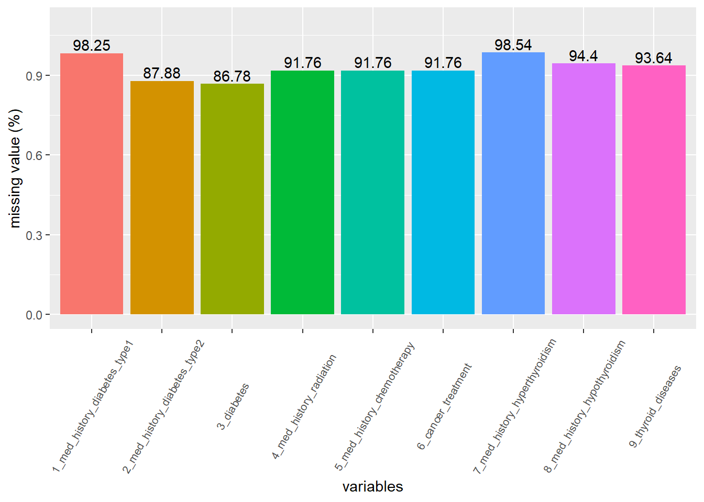

2/17/2022
Last updated: 2022-06-22
Checks: 6 1
Knit directory: Collaborations/
This reproducible R Markdown analysis was created with workflowr (version 1.7.0). The Checks tab describes the reproducibility checks that were applied when the results were created. The Past versions tab lists the development history.
The R Markdown file has unstaged changes. To know which version of
the R Markdown file created these results, you’ll want to first commit
it to the Git repo. If you’re still working on the analysis, you can
ignore this warning. When you’re finished, you can run
wflow_publish to commit the R Markdown file and build the
HTML.
Great job! The global environment was empty. Objects defined in the global environment can affect the analysis in your R Markdown file in unknown ways. For reproduciblity it’s best to always run the code in an empty environment.
The command set.seed(20210523) was run prior to running
the code in the R Markdown file. Setting a seed ensures that any results
that rely on randomness, e.g. subsampling or permutations, are
reproducible.
Great job! Recording the operating system, R version, and package versions is critical for reproducibility.
Nice! There were no cached chunks for this analysis, so you can be confident that you successfully produced the results during this run.
Great job! Using relative paths to the files within your workflowr project makes it easier to run your code on other machines.
Great! You are using Git for version control. Tracking code development and connecting the code version to the results is critical for reproducibility.
The results in this page were generated with repository version 9e11222. See the Past versions tab to see a history of the changes made to the R Markdown and HTML files.
Note that you need to be careful to ensure that all relevant files for
the analysis have been committed to Git prior to generating the results
(you can use wflow_publish or
wflow_git_commit). workflowr only checks the R Markdown
file, but you know if there are other scripts or data files that it
depends on. Below is the status of the Git repository when the results
were generated:
Ignored files:
Ignored: analysis/.Rhistory
Unstaged changes:
Modified: analysis/2022_Feb4.Rmd
Note that any generated files, e.g. HTML, png, CSS, etc., are not included in this status report because it is ok for generated content to have uncommitted changes.
These are the previous versions of the repository in which changes were
made to the R Markdown (analysis/2022_Feb4.Rmd) and HTML
(docs/2022_Feb4.html) files. If you’ve configured a remote
Git repository (see ?wflow_git_remote), click on the
hyperlinks in the table below to view the files as they were in that
past version.
| File | Version | Author | Date | Message |
|---|---|---|---|---|
| Rmd | 3fff321 | Han | 2022-06-14 | 6/14/2022 |
| html | 3fff321 | Han | 2022-06-14 | 6/14/2022 |
| Rmd | 78cfd00 | Han | 2022-06-09 | 6/9/2022 |
| html | 78cfd00 | Han | 2022-06-09 | 6/9/2022 |
| Rmd | 2c0c6e9 | Han | 2022-05-23 | 5/23/2022 |
| html | 2c0c6e9 | Han | 2022-05-23 | 5/23/2022 |
| Rmd | 24c5305 | Han | 2022-05-09 | 5/9/2022 |
| html | 24c5305 | Han | 2022-05-09 | 5/9/2022 |
| Rmd | bec919a | Han | 2022-05-09 | 5/9/2022 |
| html | bec919a | Han | 2022-05-09 | 5/9/2022 |
| Rmd | 81f6a86 | Han | 2022-05-05 | 5/5/2022 |
| html | 81f6a86 | Han | 2022-05-05 | 5/5/2022 |
| Rmd | e4cf46d | Han | 2022-04-21 | 4/21/2022 |
| html | e4cf46d | Han | 2022-04-21 | 4/21/2022 |
| Rmd | 1a1a7fa | Han | 2022-04-18 | 4/18/2022 |
| html | 1a1a7fa | Han | 2022-04-18 | 4/18/2022 |
| Rmd | b9b6e99 | Han | 2022-04-07 | 4/7/2022 |
| html | b9b6e99 | Han | 2022-04-07 | 4/7/2022 |
| Rmd | ea918a0 | Han | 2022-04-06 | 4/6/2022 |
| html | ea918a0 | Han | 2022-04-06 | 4/6/2022 |
| Rmd | fa7eff1 | Han | 2022-04-01 | 4/1/2022 |
| html | fa7eff1 | Han | 2022-04-01 | 4/1/2022 |
| Rmd | 3e2fd41 | Han | 2022-03-18 | 3/18/2022 |
| html | 3e2fd41 | Han | 2022-03-18 | 3/18/2022 |
| Rmd | 5843fa8 | Han | 2022-03-18 | 3/18/2022 |
| html | 5843fa8 | Han | 2022-03-18 | 3/18/2022 |
| Rmd | 3399aaf | Han | 2022-03-17 | 3/17/2022 |
| html | 3399aaf | Han | 2022-03-17 | 3/17/2022 |
| Rmd | c1b63d8 | Han | 2022-03-07 | 3/7/2022 |
| html | c1b63d8 | Han | 2022-03-07 | 3/7/2022 |
| Rmd | 6b7dda0 | Han | 2022-03-07 | 3/7/2022 |
| html | 6b7dda0 | Han | 2022-03-07 | 3/7/2022 |
| Rmd | 7e83a63 | Han | 2022-03-04 | 3/4/2022 |
| html | 7e83a63 | Han | 2022-03-04 | 3/4/2022 |
| Rmd | 68dbd81 | Han | 2022-03-04 | 3/4/2022 |
| html | 68dbd81 | Han | 2022-03-04 | 3/4/2022 |
| Rmd | a241b51 | Han | 2022-03-04 | 3/4/2022 |
| html | a241b51 | Han | 2022-03-04 | 3/4/2022 |
| Rmd | 3496e53 | Han | 2022-03-04 | 3/4/2022 |
| html | 3496e53 | Han | 2022-03-04 | 3/4/2022 |
| Rmd | d5dfad3 | Han | 2022-03-04 | 3/4/2022 |
| html | d5dfad3 | Han | 2022-03-04 | 3/4/2022 |
| Rmd | 7c5159a | Han | 2022-03-04 | 3/4/2022 |
| html | 7c5159a | Han | 2022-03-04 | 3/4/2022 |
| Rmd | 16d7ab4 | Han | 2022-02-25 | 2/25/2022 |
| html | 16d7ab4 | Han | 2022-02-25 | 2/25/2022 |
| Rmd | 9c961fd | Han | 2022-02-17 | 2/17/2022 |
| html | 9c961fd | Han | 2022-02-17 | 2/17/2022 |
Data Quality (Mar4)
- missing variables are coded as
N_A - In med history columns with Yes/No answers, if the answer is Yes, it is marked as 1. If the answer is No, then it’s marked as 0. If its not available, it’s marked as 2.
- for gender, 0=Unknown, 1=Male, 2=Female
there are 5876 rows and 93 variables | x |
|---|
| Postal |
| Sex |
| TreatmentDate |
| Age_at_exam |
| Age_at_report |
| study_id |
| permanent_teeth_present |
| permanent_teeth_missing |
| teeth_affected_caries |
| teeth_surfaces_affected_caries |
| number_of_teeth_with_fixed_restorations |
| number_of_direct_restorations_surfaces |
| number_of_indirect_restorations |
| restored_teeth |
| number_of_implants |
| number_of_removable_dentures |
| number_caries_preventive |
| DMFT |
| treatment_plan_exists |
| insurance |
| caries_risk |
| number_of_teeth_direct_restorations_without_caries |
| med_history_past_year_under_care_of_physician |
| med_history_radiation |
| med_history_chemotherapy |
| med_history_oral_bisphonates |
| med_history_intravenous_bisphonates |
| med_history_tobacco |
| alcoholic_beverages_med_history |
| prescription_or_street_drugs_med_history |
| have_you_been_to_the_dentist_before |
| dent_history_extractions |
| dent_history_implants |
| dent_history_tmj_surgery |
| dent_history_periodontal_gum_treatments |
| dent_history_bridges |
| dent_history_dentures |
| dent_history_partials |
| dent_history_root_canal_treatment |
| dent_history_orthodontic_braces |
| dent_history_currently_experiencing_dental_pain_or_discomfort |
| dent_history_clicking |
| dent_history_popping |
| dent_history_discomfort_jaw_opening |
| dent_history_limited_opening |
| dent_history_how_often_do_you_brush_your_teeth |
| dent_history_how_often_do_you_floss_your_teeth |
| dent_history_clench |
| dent_history_brux_grind |
| med_history_high_blood_pressure |
| med_history_sleep_apnea |
| med_history_diabetes_type1 |
| med_history_diabetes_type2 |
| med_history_hypothyroidism |
| med_history_hyperthyroidism |
| med_history_dementia_alzheimers_memory_loss |
| med_history_depression |
| med_history_bleeding_disorders |
| med_history_acid_reflux_gerd |
| med_history_arthritis |
| med_history_osteoporosis |
| dent_history_temporomandibular_joint_disorder |
| med_history_bulimia |
| med_history_premedication_prior_dental_rx |
| dent_history_do_you_brush_with_fluoride_toothpaste |
| dent_history_is_there_fluoride_in_your_drinking_water |
| dent_history_do_you_snack_between_meals |
| dent_history_do_you_feel_you_have_too_little_saliva_in_your_mouth |
| med_history_are_you_using_tobacco_products_now |
| city |
| county |
| county_health_outcomes_rank |
| county_health_factors_rank |
| county_dentist_rate |
| county_percent_uninsured |
| county_primary_care_physicians_rate |
| county_percent_completed_high_school |
| county_percent_some_college |
| county_percent_unemployed |
| county_percent_fair_or_poor_health |
| county_percent_smokers |
| county_food_environment_index |
| county_excessive_drinking |
| county_population_count |
| county_life_expectancy_rate |
| county_percent_black |
| county_percent_american_indian_alaska_native |
| county_percent_asian |
| county_percent_native_hawaiian_other_pacific_islander |
| county_percent_hispanic |
| county_percent_non_hispanic_white |
| county_percent_female |
| county_percent_rural |
 it appears that
it appears that med_history_depression,
med_history_diabetes_type1,
med_history_hypothyroidism,
med_history_hyperthyroidism have missing values as high as
>90%.
split by county

- use column
county - some
0’s are not exactly zero, but close to 0.

- pick the top 7 counties and the rest as others
split by age and gender

- use
Age_at_examas age variable
merge disease status
0:No; 1:yes; 2:missing
| disease 1 | disease 2 | disease 1 + disease 2 |
|---|---|---|
| 0 | 0 | 0 |
| 0 | 1 | 1 |
| 0 | 2 | 0 |
| 1 | 0 | 1 |
| 1 | 1 | 1 |
| 1 | 2 | 1 |
| 2 | 0 | 0 |
| 2 | 1 | 1 |
| 2 | 2 | 2 |

- combing diseases doesn’t seem to improve too much
med_history_diabetes_type1+med_history_diabetes_type2=diabetes,med_history_hyperthyroidism+med_history_hypothyroidism=thyroid_diseases- radiation and chemotherapy appears both to patients
natural dentition

- use
permanent_teeth_presentto count the number of teeth.
caries

use column
teeth_affected_cariesto count number of teeth effected by cariespeople without teeth are taken out
permanent_teeth_present!=0

Comparison between Milwaukee and non-Milwaukee may not be fair due to dominating population from Milwaukee
people without teeth are excluded
permanent_teeth_present!=0
Medical conditions

use
get(medical_condition[i])!=2to count number of patients, i.e. without missing valuesmed_history_diabetes_type1+med_history_diabetes_type2=diabetes,med_history_hyperthyroidism+med_history_hypothyroidism=thyroid_diseases

logistic regression
teeth_affected_caries
poisson regression is used
for continuous predictor, expected log count increase by \(\widehat{\beta}\) and for categorical predictors, it is the expected log count between different groups. For instance, having arthritis will results in increased caries by 10%.
med_history_arthritis
logistic regression is used
NA is replaced with No, 0
use 1160/5876 patients with arthritis
all predictors are assumed to be independent, without interactions
by default, R treats the lowest level group as reference category
Sex=1is the reference group among gender, 1=male; 2=femalecounty
Kenoshaas baseline, reference groupwhen increase age by one year (unit), while with other covariates fixed, the odds of having arthritis for older individual is 1.06 times the odds for young individual.
only age is significant
Bulimia_acid_reflux_sleep_apnea
OR 2.5 % 97.5 % p_value
(Intercept) 0.0424605 0.02440215 0.07291707 1.002672e-29
Age_at_exam 1.0357619 1.03080737 1.04079796 2.747675e-46
Sex 1.1832079 1.02947164 1.36062668 1.802719e-02
county_regroupMilwaukee 0.4718951 0.31776186 0.71190524 2.529907e-04
county_regroupOthers 0.6959310 0.45124204 1.08616553 1.049882e-01
county_regroupOzaukee 0.4943566 0.27912962 0.86814295 1.468736e-02
county_regroupRacine 0.6564597 0.40723810 1.06536603 8.563317e-02
county_regroupWalworth 0.7951968 0.45389775 1.38880617 4.208257e-01
county_regroupWashington 0.3802090 0.20541008 0.68951667 1.681633e-03
county_regroupWaukesha 0.5599707 0.36374452 0.87239417 9.213469e-03
teeth_affected_caries 1.0174433 1.00290548 1.03197800 1.763501e-02
permanent_teeth_missing 0.9986710 0.98660771 1.01064918 8.284868e-011046/5876 have
Bulimia_acid_reflux_sleep_apnea==1NA is replaced with 0, No
age is significant
several counties are significant, comparing to Kenosha
med_history_depression
OR 2.5 % 97.5 % p_value
(Intercept) 0.001089065 0.0005504835 0.002095733 3.062537e-89
Age_at_exam 1.068492516 1.0626406517 1.074508207 5.589255e-121
Sex 2.100485616 1.8152173875 2.433863542 3.345353e-23
county_regroupMilwaukee 1.310949382 0.8176894691 2.175062038 2.761623e-01
county_regroupOthers 1.800848479 1.0868608193 3.073804018 2.605300e-02
county_regroupOzaukee 1.832537575 0.9987746837 3.416457664 5.290195e-02
county_regroupRacine 1.550847834 0.8962207521 2.747169882 1.235339e-01
county_regroupWalworth 1.521240249 0.8015954312 2.914071859 2.013164e-01
county_regroupWashington 1.843265584 0.9971094639 3.455097080 5.307509e-02
county_regroupWaukesha 1.107296087 0.6661171227 1.894524366 7.013469e-01
teeth_affected_caries 1.014060772 0.9984571581 1.029703804 7.558977e-02
permanent_teeth_missing 1.013864674 1.0023011206 1.025468018 1.812932e-02- 553/5876 patients have depression
med_history_diabetes_type1+med_history_diabetes_type2
OR 2.5 % 97.5 % p_value
(Intercept) 0.01234564 0.006152474 0.0239273 5.113443e-37
Age_at_exam 1.04283046 1.036974721 1.0488099 1.394908e-47
Sex 0.89033241 0.759837073 1.0432576 1.507628e-01
county_regroupMilwaukee 1.17065594 0.714530466 2.0165213 5.495691e-01
county_regroupOthers 0.69247247 0.396176405 1.2553809 2.095424e-01
county_regroupOzaukee 0.75980811 0.369543557 1.5567477 4.513708e-01
county_regroupRacine 1.34499621 0.755544141 2.4763861 3.255980e-01
county_regroupWalworth 0.90298279 0.433116897 1.8702983 7.832361e-01
county_regroupWashington 0.86898540 0.426639291 1.7694492 6.971596e-01
county_regroupWaukesha 0.65315010 0.376048511 1.1782697 1.418857e-01
teeth_affected_caries 1.01891871 1.001985529 1.0358030 2.680228e-02
permanent_teeth_missing 1.03039925 1.017645758 1.0431507 2.091159e-06- 773/5876 has DB
med_history_hyperthyroidism+med_history_hypothyroidism:thyroid disease
OR 2.5 % 97.5 % p_value
(Intercept) 1.100749e+03 0.0000000 Inf 0.9997885
Age_at_exam 9.400186e-01 0.7574231 1.103138 0.4582574
Sex 3.650071e+08 0.0000000 NA 0.9976969
county_regroupMilwaukee 6.830454e-09 NA Inf 0.9994122
county_regroupOthers 1.146076e+00 0.0000000 Inf 0.9999965
county_regroupOzaukee 4.651622e-01 0.0000000 Inf 0.9999836
county_regroupRacine 6.096735e-01 0.0000000 Inf 0.9999883
county_regroupWalworth 1.105497e+00 0.0000000 Inf 0.9999980
county_regroupWashington 5.086766e-01 0.0000000 Inf 0.9999872
county_regroupWaukesha 1.786385e+00 0.0000000 Inf 0.9999842373/374 have thyroid diseases
none variable is significant
med_history_radiation+med_history_chemotherapy
OR 2.5 % 97.5 % p_value
(Intercept) 0.005079416 0.0007475775 0.03205994 2.788058e-08
Age_at_exam 1.085456754 1.0682512942 1.10436549 3.358702e-22
Sex 1.224568431 0.7637719977 1.96334289 3.993116e-01
county_regroupMilwaukee 3.144985833 0.7489611616 13.43822383 1.128902e-01
county_regroupOthers 1.703209804 0.3806898010 7.71983722 4.809851e-01
county_regroupOzaukee 1.196467714 0.1859641947 7.81037839 8.493041e-01
county_regroupRacine 0.905737877 0.1880299464 4.39692018 9.006954e-01
county_regroupWalworth 3.173598150 0.4399784107 31.05474159 2.737079e-01
county_regroupWashington 2.326020171 0.3543848525 15.93815645 3.798928e-01
county_regroupWaukesha 2.394329804 0.5336159972 10.90504849 2.491551e-01317/484 receive either radiation or chemotherapy
only age is significant
med_history_tobacco
OR 2.5 % 97.5 % p_value
(Intercept) 0.4147412 0.3763832 0.456697 3.522860e-71
permanent_teeth_missing 1.0706733 1.0605688 1.081034 1.339797e-44
teeth_affected_caries 1.0528640 1.0418741 1.064036 8.311928e-222582/5852 patients are tobacco users
both predictors are significant
statistical software
_
platform x86_64-w64-mingw32
arch x86_64
os mingw32
system x86_64, mingw32
status
major 4
minor 1.2
year 2021
month 11
day 01
svn rev 81115
language R
version.string R version 4.1.2 (2021-11-01)
nickname Bird Hippie
sessionInfo()R version 4.1.2 (2021-11-01)
Platform: x86_64-w64-mingw32/x64 (64-bit)
Running under: Windows 10 x64 (build 18363)
Matrix products: default
locale:
[1] LC_COLLATE=English_United States.1252
[2] LC_CTYPE=English_United States.1252
[3] LC_MONETARY=English_United States.1252
[4] LC_NUMERIC=C
[5] LC_TIME=English_United States.1252
attached base packages:
[1] stats graphics grDevices utils datasets methods base
other attached packages:
[1] ggpubr_0.4.0 gridExtra_2.3 forcats_0.5.1 stringr_1.4.0
[5] dplyr_1.0.7 purrr_0.3.4 readr_2.1.1 tidyr_1.1.4
[9] tibble_3.1.6 ggplot2_3.3.5 tidyverse_1.3.1 kableExtra_1.3.4
loaded via a namespace (and not attached):
[1] httr_1.4.2 sass_0.4.1 jsonlite_1.7.3 viridisLite_0.4.0
[5] carData_3.0-5 modelr_0.1.8 bslib_0.3.1 assertthat_0.2.1
[9] highr_0.9 cellranger_1.1.0 yaml_2.2.2 pillar_1.6.5
[13] backports_1.4.1 glue_1.6.0 digest_0.6.29 promises_1.2.0.1
[17] ggsignif_0.6.3 rvest_1.0.2 colorspace_2.0-2 cowplot_1.1.1
[21] htmltools_0.5.2 httpuv_1.6.5 pkgconfig_2.0.3 broom_0.7.11
[25] haven_2.4.3 scales_1.1.1 webshot_0.5.2 svglite_2.0.0
[29] whisker_0.4 later_1.3.0 tzdb_0.2.0 git2r_0.29.0
[33] farver_2.1.0 generics_0.1.1 car_3.0-12 ellipsis_0.3.2
[37] withr_2.4.3 cli_3.1.1 magrittr_2.0.1 crayon_1.4.2
[41] readxl_1.3.1 evaluate_0.14 fs_1.5.2 fansi_1.0.2
[45] MASS_7.3-54 rstatix_0.7.0 xml2_1.3.3 tools_4.1.2
[49] hms_1.1.1 lifecycle_1.0.1 munsell_0.5.0 reprex_2.0.1
[53] compiler_4.1.2 jquerylib_0.1.4 systemfonts_1.0.3 rlang_0.4.12
[57] grid_4.1.2 rstudioapi_0.13 labeling_0.4.2 rmarkdown_2.11
[61] gtable_0.3.0 abind_1.4-5 DBI_1.1.2 R6_2.5.1
[65] lubridate_1.8.0 knitr_1.37 fastmap_1.1.0 utf8_1.2.2
[69] workflowr_1.7.0 rprojroot_2.0.2 stringi_1.7.6 Rcpp_1.0.8
[73] vctrs_0.3.8 dbplyr_2.1.1 tidyselect_1.1.1 xfun_0.29